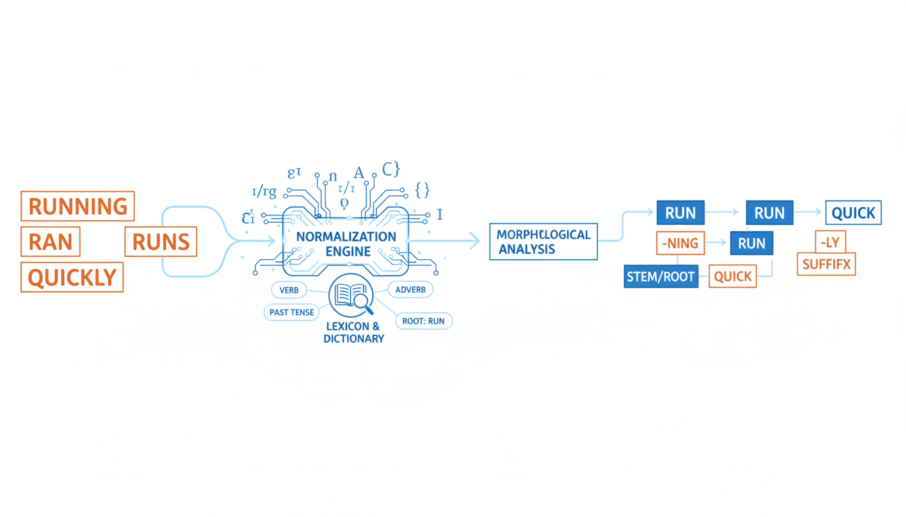
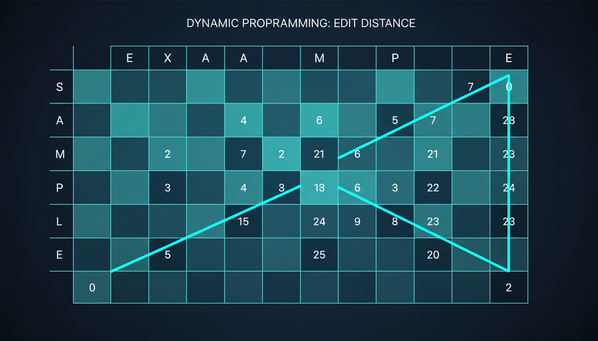

Foundations of Natural Language Processing
Overview
Origins and Challenges of NLP
Historical evolution, key milestones, and fundamental challenges in natural language processing
Regular Expressions
Pattern syntax, building blocks, and practical text extraction applications
Words, Corpora, and Normalization
Tokenization, stemming, lemmatization, and the preprocessing pipeline
Minimum Edit Distance
Levenshtein distance, dynamic programming, and similarity measurement
Origins and Challenges of NLP
INTRODUCTION
Natural Language Processing (NLP) is a field at the intersection of linguistics, computer science, and artificial intelligence. It enables computers to understand, interpret, and generate human language in valuable ways.
NLP bridges the gap between human communication and machine comprehension, allowing seamless interaction between humans and technology.
Understanding Meaning
Extract semantic content from text and speech
Analyzing Structure
Recognize grammar, syntax, and sentence construction
Generating Language
Create natural, coherent, grammatically correct text
Virtual Assistants
Siri, Alexa, ChatGPT
Translation
Google Translate
Search Engines
Google, Bing
Sentiment Analysis
Brand monitoring
Healthcare
Medical record analysis
Legal & Finance
Contract analysis
Key Insight: NLP transforms unstructured text into structured data that machines can process, analyze, and learn from.
Historical Evolution
Machine Translation (MT) was the primary driving force. Researchers believed translation was a simple substitution task. Rule-based systems emerged with handcrafted linguistic rules.
Hand-built symbolic NLP systems with increasing formalization. Focus on parsing, semantic composition, and knowledge representation. ELIZA chatbot demonstrated pattern matching.
Shift from handcrafted rules to data-driven approaches. Probabilistic models and supervised machine learning dominated. Large annotated corpora became essential.
Neural networks revolutionized NLP. Transformer architectures (2017) enabled parallel processing and attention mechanisms. Large Language Models (LLMs) like GPT and BERT achieve remarkable performance.
Timeline
Alan Turing publishes "Computing Machinery and Intelligence" proposing the famous Turing Test to determine if a machine can demonstrate human-like intelligence.
First major machine translation demonstration: 60 Russian sentences translated into English using rule-based algorithms, sparking interest in computational linguistics.
Joseph Weizenbaum creates ELIZA, one of the first chatbots simulating a psychotherapist using simple pattern matching, demonstrating early natural language interaction.
Long Short-Term Memory (LSTM) networks introduced, solving the vanishing gradient problem and enabling better processing of long sequences in language tasks.
Google's "Attention Is All You Need" paper introduces the Transformer architecture with self-attention mechanism, revolutionizing how models process language.
OpenAI releases GPT-3 with 175 billion parameters, demonstrating unprecedented language generation capabilities and few-shot learning abilities.
Fundamental Issues
Human language is inherently ambiguous. Same words can have multiple meanings depending on context.
Example: "I saw her duck" could mean observing her pet or watching her lower her head.
NLP models require large, diverse, high-quality annotated datasets that are expensive and time-consuming to create.
Challenge: Biased or unrepresentative data leads to biased models and unfair outcomes.
Real-world text contains misspellings, grammatical errors, slang, abbreviations, and informal language.
Example: "luv this movi sooo much" - humans understand, but machines struggle.
Over 7,000 languages worldwide with different scripts, grammars, and cultural contexts. Most NLP resources focus on English.
Gap: Low-resource languages lack training data and tools.
THE CORE CHALLENGE
Why language understanding is fundamentally difficult
Words with multiple meanings (polysemy) create uncertainty in interpretation.
"Bank" can mean:
Sentence structure allows multiple grammatical interpretations.
"Flying planes can be dangerous"
Meaning depends on context, world knowledge, and intent.
"The chicken is ready to eat"
Ambiguity is the fundamental reason NLP is difficult. Humans resolve ambiguity effortlessly using context, world knowledge, and reasoning, but machines struggle. Current language models are statistical pattern matchers—they don't truly "understand" language the way humans do. As Emily Bender notes: "Language models are not understanding language—they are matching statistical patterns."
Regular Expressions in NLP
Foundation
Regular Expressions (regex or regexp) are a powerful sequence of characters that forms a search pattern. They provide a concise and flexible means for matching strings of text, such as particular characters, words, or patterns of characters.
Think of regex as a "Google for text"—it allows you to search, match, and manipulate text based on specific patterns rather than exact strings.
Text Cleaning
Remove HTML tags, special characters, noise
Information Extraction
Extract emails, phone numbers, dates, URLs
Tokenization
Define word boundaries and split criteria
Validation
Verify text formats and structures
Pattern: \d{3}-\d{3}-\d{4}
Matches: 123-456-7890
This pattern matches US phone numbers with dashes.
• Email Validation: Verify email format correctness
• Data Parsing: Extract structured data from unstructured text
• Search & Replace: Bulk text transformations
• Log Analysis: Parse server logs and error messages
• Web Scraping: Extract specific content from HTML
Key Insight: Regex is essential for preprocessing raw text before applying more sophisticated NLP techniques.
Syntax
\d
Any digit (0-9)
\w
Word character (a-z, A-Z, 0-9, _)
\s
Whitespace (space, tab, newline)
.
Any character except newline
[abc]
Any character in brackets
^
Start of string
$
End of string
\b
Word boundary
*
0 or more
+
1 or more
?
0 or 1 (optional)
{n}
Exactly n times
{n,m}
Between n and m times
|
OR operator
()
Grouping
\
Escape character
Pro Tip:
Combine these building blocks to create powerful patterns. Example:
\b[A-Z][a-z]+\b
matches capitalized words.
Practical Applications
Pattern: [\w\.-]+@[\w\.-]+\.\w+
Matches: john.doe@email.com, user_name@company.co.uk
Breakdown: word chars + @ + word chars + . + word chars
Pattern: ^(\+1|1)?\s*\(?\d{3}\)?[\s.-]?\d{3}[\s.-]?\d{4}$
Matches: 123-456-7890, (123) 456-7890, +1 123.456.7890
Handles optional country code, various separators
Pattern: <[^>]+>
Input: <p>Hello</p>
Output: Hello
Pattern: https?://[^\s]+
Matches: http://example.com, https://site.org/path
Finds web addresses in text
Best Practice: Always test regex patterns with diverse examples including edge cases before deployment.
Implementation
re ModulePython provides built-in support for regular expressions through the re module.
import re
re.match(pattern, string)
Matches pattern only at the start of string
re.search(pattern, string)
Searches entire string for first match
re.findall(pattern, string)
Returns all matches as a list
re.sub(pattern, repl, string)
Replaces matches with replacement text
import re
text = "Contact us at support@example.com"
pattern = r'[\w\.-]+@[\w\.-]+\.\w+'
# Find all email addresses
emails = re.findall(pattern, text)
print(emails)
# Output: ['support@example.com']
# Replace emails with [EMAIL]
masked = re.sub(pattern, '[EMAIL]', text)
print(masked)
# Output: "Contact us at [EMAIL]"
pattern = re.compile(r'...')
Words, Corpora, and Normalization
Foundation
A corpus (plural: corpora) is a large and structured collection of texts used for linguistic analysis, research, and training NLP models. Corpora serve as the foundation for statistical analysis and machine learning in NLP.
Think of a corpus as a dataset for language—it provides the raw material from which models learn patterns, grammar, vocabulary, and semantics.
Training Data
ML models learn from corpus examples
Statistical Analysis
Word frequencies, co-occurrences, patterns
Benchmarking
Standard datasets for model evaluation
Annotated vs. Unannotated
Annotated: Tagged with POS, parses, entities
Unannotated: Raw text only
Monolingual vs. Multilingual
Monolingual: Single language
Multilingual: Parallel texts in multiple languages
Domain-Specific
Medical, legal, financial, scientific, literary
Temporal
Historical corpora showing language evolution
Key Principle: "Garbage in, garbage out"—corpus quality directly impacts model performance.
Resources
First million-word electronic corpus of English
Size: 1M words
Genre: 500 texts, 15 categories
Use: POS tagging, genre analysis
Parsed corpus with syntactic annotations
Size: 4.5M words (WSJ)
Annotation: POS + parse trees
Use: Parsing, POS tagging benchmark
Lexical database of English words
Content: Synsets, relations, definitions
Relations: Synonymy, hypernymy, hyponymy
Use: Lemmatization, WSD, similarity
Literary texts from Project Gutenberg
Size: 25,000+ books
Content: Classic literature
Use: Language modeling, style analysis
Encyclopedia articles dump
Size: Billions of words
Languages: 300+ languages
Use: Pretraining LLMs, knowledge extraction
Web crawl data from billions of pages
Size: Petabytes of data
Content: Web pages, diverse topics
Use: Large-scale language modeling
Access: Most corpora available via NLTK, spaCy, Hugging Face Datasets, or official websites.
Workflow
Text normalization transforms raw, messy text into a clean, structured format suitable for NLP analysis. The pipeline varies based on the task, but follows a general sequence:
Raw Text
Unprocessed input
Cleaning
Regex, HTML removal
Normalization
Lowercase, punctuation
Tokenization
Split into tokens
Stopword Removal
Remove common words
Stem/Lemmatize
Reduce to root form
Clean Tokens
Analysis-ready
Lowercasing
"Hello" → "hello" for consistency
Punctuation Removal
Remove or replace special chars
Number Handling
Remove or normalize digits
Whitespace Cleanup
Remove extra spaces, newlines
Not all steps are needed for every task:
• Sentiment Analysis: Keep punctuation (!, ?), don't remove stopwords
• Information Retrieval: Aggressive normalization, stemming
• Machine Translation: Minimal preprocessing, keep full text
• Named Entity Recognition: Preserve capitalization
Important: Modern LLMs (GPT, BERT) often require minimal preprocessing—they learn patterns directly from raw text.
Step 1
Tokenization is the process of breaking down text into smaller units called tokens. These tokens can be words, sentences, characters, or subwords.
Tokenization is the foundation of NLP—before any analysis, text must be split into manageable pieces that algorithms can process.
Word Tokenization
Split by word boundaries
"Hello world" → ["Hello", "world"]
Sentence Tokenization
Split by sentence boundaries
"Hello. World!" → ["Hello.", "World!"]
Character Tokenization
Split into individual characters
"Hello" → ["H", "e", "l", "l", "o"]
Deep learning models use subword tokenization to handle out-of-vocabulary words:
Byte-Pair Encoding (BPE)
Iteratively merge most frequent character pairs. Used in GPT, BERT.
"unhappiness" → ["un", "happiness"]
WordPiece
Google's variant maximizing language model likelihood. Used in BERT.
SentencePiece
Language-agnostic, works without pre-tokenization. Used in T5, XLNet.
Step 2
Stemming is a rule-based process that reduces words to their root form (stem) by removing prefixes and suffixes. The resulting stem may not be a valid dictionary word.
Stemming operates like a "linguistic chainsaw"—it chops off word endings based on heuristic rules without considering context or grammar.
The most popular stemming algorithm (Martin Porter, 1980)
Step 1: Plurals & Participles
caresses → caress, running → run
Step 2: Suffixes (-ational, -ness)
rational → ration, emotional → emote
Step 3: Complex Suffixes
happiness → happy, joyful → joy
Step 4: Final Suffixes (-al, -ance)
adoption → adopt, allowance → allow
Step 5: Cleanup (-e, double letters)
probate → probat, controll → control
| Original | Stem |
|---|---|
| running | run |
| studies | studi |
| happily | happili |
| communication | commun |
| jumps | jump |
Advantages
Disadvantages
Best For: Search engines, information retrieval, document clustering where speed matters more than linguistic accuracy.
Step 3
Lemmatization is the process of reducing words to their base or dictionary form (lemma) using vocabulary and morphological analysis. Unlike stemming, the result is always a valid word.
Lemmatization acts like a "linguistic scalpel"—it carefully considers context and grammar to return meaningful base forms.
The most popular lemmatization tool, based on the WordNet lexical database:
Groups words by:
Requires POS Tag:
• Noun (n): dogs → dog
• Verb (v): running → run
• Adjective (a): better → good
| Original | POS | Lemma |
|---|---|---|
| studies | verb | study |
| better | adj | good |
| mice | noun | mouse |
| went | verb | go |
| communication | noun | communication |
Advantages
Disadvantages
Best For: Chatbots, machine translation, sentiment analysis, and any task requiring linguistic accuracy.
Comparison
Approach
Rule-based suffix removal
Output
May produce non-words (studi, happili)
Speed
Fast, O(n) per word
Context
No context awareness
Best For
IR systems, search engines, clustering
Approach
Dictionary-based morphological analysis
Output
Always valid dictionary words
Speed
Slower, requires lookup
Context
POS-aware, context-sensitive
Best For
Semantic tasks, chatbots, translation
Information Retrieval
Use Stemming for faster query matching in search engines
Conversational AI
Use Lemmatization for accurate understanding in chatbots
Deep Learning
Use Neither—modern LLMs learn subword tokens directly
Remember: If speed is critical and you can tolerate some imprecision → Stemming. If semantic accuracy matters → Lemmatization.
Implementation
# Install NLTK
pip install nltk
import nltk
# Download required data
nltk.download('punkt')
nltk.download('stopwords')
nltk.download('wordnet')
nltk.download('averaged_perceptron_tagger')
from nltk.tokenize import word_tokenize, sent_tokenize
text = "Hello world! NLP is fun."
words = word_tokenize(text)
# ['Hello', 'world', '!', 'NLP', 'is', 'fun', '.']
sentences = sent_tokenize(text)
# ['Hello world!', 'NLP is fun.']
from nltk.corpus import stopwords
stop_words = set(stopwords.words('english'))
words = ['the', 'cat', 'is', 'on', 'the', 'mat']
filtered = [w for w in words if w not in stop_words]
# ['cat', 'mat']
from nltk.stem import PorterStemmer
stemmer = PorterStemmer()
words = ['running', 'studies', 'happily']
stemmed = [stemmer.stem(w) for w in words]
# ['run', 'studi', 'happili']
from nltk.stem import WordNetLemmatizer
lemmatizer = WordNetLemmatizer()
print(lemmatizer.lemmatize('better', pos='a'))
# 'good'
print(lemmatizer.lemmatize('studies', pos='v'))
# 'study'
print(lemmatizer.lemmatize('mice'))
# 'mouse'
def preprocess(text):
tokens = word_tokenize(text.lower())
stop_words = set(stopwords.words('english'))
tokens = [t for t in tokens if t.isalnum()]
tokens = [t for t in tokens if t not in stop_words]
lemmatizer = WordNetLemmatizer()
return [lemmatizer.lemmatize(t) for t in tokens]

Minimum Edit Distance
Introduction
The minimum edit distance between two strings is the minimum number of single-character operations (insertions, deletions, or substitutions) required to transform one string into another.
It measures string similarity—the smaller the edit distance, the more similar the strings are.
The most common type of edit distance, introduced by Vladimir Levenshtein in 1965:
All operations cost 1
Insertion, deletion, substitution each count as 1 operation
Symmetric
distance(s1, s2) = distance(s2, s1)
Metric properties
Satisfies triangle inequality
Transform "kitten" → "sitting"
1. kitten → sitten (substitute 'k' with 's')
2. sitten → sittin (substitute 'e' with 'i')
3. sittin → sitting (insert 'g' at end)
Edit Distance = 3
Key Insight: Edit distance transforms string comparison from a binary match/no-match to a continuous similarity measure.
Building Blocks
Add a character to the string
Example:
"cat" → "cats"
Insert 's' at the end
Cost: 1 operation
Remove a character from the string
Example:
"hello" → "helo"
Delete one 'l'
Cost: 1 operation
Replace one character with another
Example:
"kitten" → "sitten"
Substitute 'k' with 's'
Cost: 1 operation
Different sequences of operations can achieve the same transformation. The edit distance is the minimum number of operations across all possible paths.
Example: "abc" → "ac"
Path 1: Delete 'b' → "ac" (1 operation)
Path 2: Substitute 'b' with '' → "ac" (1 operation)
Minimum: 1 operation
Example: "cat" → "cut"
Path 1: Substitute 'a' with 'u' (1 operation)
Path 2: Delete 'a', insert 'u' (2 operations)
Minimum: 1 operation
Algorithm
Trying all possible sequences of operations results in exponential time complexity O(3n)—impractical for long strings.
We need a smarter approach that reuses solutions to subproblems.
The Wagner-Fischer algorithm (1974) builds a matrix where each cell D[i][j] contains the edit distance between:
First i characters of string 1
↓
First j characters of string 2
If we know the edit distance for all prefixes, we can compute the edit distance for longer strings by considering just one more operation.
To compute D[i][j]:
If characters match:
D[i][j] = D[i-1][j-1]
If characters differ:
D[i][j] = 1 + min(
D[i-1][j], // deletion
D[i][j-1], // insertion
D[i-1][j-1] // substitution
)
Create matrix of size (m+1) × (n+1)
Initialize first row (0 to n) and first column (0 to m)
Fill remaining cells using recurrence relation
Result is in bottom-right cell D[m][n]
Walkthrough
We'll build a 5×6 matrix (including empty string).
| "" | M | O | N | E | Y | |
| "" | 0 | 1 | 2 | 3 | 4 | 5 |
| F | 1 | |||||
| O | 2 | |||||
| O | 3 | |||||
| D | 4 |
Initialize: First row = 0,1,2,3,4,5 (insertions)
Initialize: First column = 0,1,2,3,4 (deletions)
F ≠ M, so we need 1 + min of:
D[1][1] = 1 + min(1, 1, 0) = 1
| "" | M | O | N | E | Y | |
| "" | 0 | 1 | 2 | 3 | 4 | 5 |
| F | 1 | 1 | 2 | 3 | 4 | 5 |
| O | 2 | 2 | 1 | 2 | 3 | 4 |
| O | 3 | 3 | 2 | 2 | 3 | 4 |
| D | 4 | 4 | 3 | 3 | 3 | 4 |
Edit Distance = 4
Insight: The matrix shows edit distances for all prefixes, enabling us to find the optimal path.
Detailed Example
| "" | E | X | E | C | U | T | I | O | N | |
| "" | 0 | 1 | 2 | 3 | 4 | 5 | 6 | 7 | 8 | 9 |
| I | 1 | 1 | 2 | 3 | 4 | 5 | 6 | 6 | 7 | 8 |
| N | 2 | 2 | 3 | 4 | 5 | 6 | 7 | 7 | 7 | 7 |
| T | 3 | 3 | 4 | 5 | 6 | 7 | 6 | 7 | 8 | 8 |
| E | 4 | 3 | 4 | 5 | 6 | 7 | 7 | 8 | 9 | 9 |
| N | 5 | 4 | 5 | 6 | 7 | 8 | 8 | 9 | 10 | 8 |
| T | 6 | 5 | 6 | 7 | 8 | 9 | 8 | 9 | 10 | 9 |
| I | 7 | 6 | 7 | 8 | 9 | 10 | 9 | 8 | 9 | 10 |
| O | 8 | 7 | 8 | 9 | 10 | 11 | 10 | 9 | 8 | 9 |
| N | 9 | 8 | 9 | 10 | 11 | 12 | 11 | 10 | 9 | 8 |
1. INTENTION → ENTENTION (substitute I→E)
2. ENTENTION → EXECUTION (substitute N→X)
3. EXECUTION (insert C after E)
4. EXECUUTION (insert U after U)
5. EXECUTION → EXECUTION (substitute O→N)
Minimum Edit Distance
5
Bottom-right cell of the matrix
Real-World Uses
Find closest valid words for misspellings
"accomodate" → "accommodate"
Distance = 1 (double 'c', 'm')
DNA/RNA sequence alignment
Compare genetic sequences
Find evolutionary relationships
Measure similarity between documents
Detect paraphrased content
Identify copied passages
BLEU, METEOR metrics use edit distance
Compare machine vs human translation
Score translation quality
Error analysis and correction
Match recognized vs intended text
Improve ASR accuracy
Record linkage and deduplication
Match names with variations
"John Smith" ≈ "Jon Smyth"
Version Control
Git diff algorithms
Music
Melody comparison
Computer Vision
Image feature matching
Biometrics
Fingerprint matching
Code
def edit_distance(s1, s2):
m, n = len(s1), len(s2)
# Create matrix
dp = [[0] * (n + 1) for _ in range(m + 1)]
# Initialize first row and column
for i in range(m + 1):
dp[i][0] = i
for j in range(n + 1):
dp[0][j] = j
# Fill the matrix
for i in range(1, m + 1):
for j in range(1, n + 1):
if s1[i-1] == s2[j-1]:
dp[i][j] = dp[i-1][j-1]
else:
dp[i][j] = 1 + min(
dp[i-1][j], # delete
dp[i][j-1], # insert
dp[i-1][j-1] # substitute
)
return dp[m][n]
# Option 1: python-Levenshtein
import Levenshtein
distance = Levenshtein.distance("kitten", "sitting")
# Returns: 3
# Option 2: jellyfish
import jellyfish
distance = jellyfish.levenshtein_distance("kitten", "sitting")
# Returns: 3
# Test the function
s1, s2 = "kitten", "sitting"
dist = edit_distance(s1, s2)
print(f"Distance: {dist}")
# Output: Distance: 3
# Spell checker example
dictionary = ["apple", "apply", "apart", "ape"]
misspelled = "aple"
suggestions = sorted(dictionary,
key=lambda w: edit_distance(w, misspelled))
print(suggestions[:3])
# Output: ['apple', 'apply', 'apart']
• Damerau-Levenshtein: Adds transposition (swapping adjacent characters)
• Weighted Edit Distance: Different costs for different operations
• Longest Common Subsequence (LCS): Related problem, finds shared sequence
• Hamming Distance: Only substitutions, strings must be same length
Analysis
O(m × n)
Where m and n are the lengths of the two strings
We fill a matrix with (m+1) × (n+1) cells, and each cell takes O(1) time to compute.
O(m × n)
For storing the full DP matrix
Can be optimized to O(min(m, n)) by storing only two rows at a time.
Brute Force
Time: O(3max(m,n))
Exponential - tries all possible paths
Dynamic Programming
Time: O(m × n)
Polynomial - reuses subproblem solutions
Short Strings
Very fast, negligible time
Medium Strings
100 chars: ~10k operations
Long Strings
Use optimized versions
Optimization Tip: For very long strings, consider using a threshold—if edit distance exceeds a value, stop early.
Four eras: Rule-based → Symbolic → Statistical → Deep Learning. Understanding history helps appreciate current capabilities.
Pattern matching is fundamental for text cleaning and extraction. Master regex for efficient preprocessing.
Tokenization → Stopword removal → Stemming/Lemmatization. Choose based on task requirements.
Dynamic programming enables efficient string comparison. O(m×n) time vs exponential brute force.
These foundations enable all modern NLP applications—from search engines to chatbots, from translation to sentiment analysis. Master the basics, build the future.